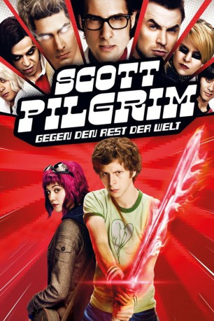

#590 Scott Pilgrim gegen den Rest der Welt
Alternativ: Scott Pilgrim vs. the World
 
 IMDB-Wertung: 7.5 / 10
IMDB-Wertung: 7.5 / 10  Metascore: 69
Metascore: 69 
Scott Pilgrim hat keinen Job, aber dafür einigen Charme. Und außerdem ist der Bassist der völlig durchschnittlichen Band Sex Bob-Omb gerade dem Mädchen seiner Träume begegnet. Was Musikgeschmack angeht, kennt Scott sich gut aus, doch mit der Liebe tat er sich schon immer etwas schwerer. Zwar hat auch er ein paar Exfreundinnen, die ihm irgendwie auf den Fersen sind, doch als Ramona Flowers auf Rollschuhen in sein Leben braust, muss er erstmal mit ihren sieben Exfreunden fertig werden, denn die Schurken machen keinen Hehl daraus, dass sie es auf ihn abgesehen haben.
Jahr: 2010
Dauer: 112 Minuten
FSK: 12
Land: USA Studio: Universal PicturesTonspuren: DTS - ,
Untertitel: Deutsch, Englisch,
Auflösung: 1080p (1920x1040) Größe: 12288 MB
Genre: Action, Komödie, Fantasy, Liebe
Regisseur: Edgar Wright
Drehbuch: Michael Bacall, Edgar Wright, Bryan Lee O'Malley
Soundtrack: Nigel Godrich
Darsteller:
 Michael Cera als Scott Pilgrim
Michael Cera als Scott Pilgrim Alison Pill als Kim Pine
Alison Pill als Kim Pine- Mark Webber als Stephen Stills
 Johnny Simmons als Young Neil
Johnny Simmons als Young Neil- Ellen Wong als Knives Chau
 Kieran Culkin als Wallace Wells
Kieran Culkin als Wallace Wells Anna Kendrick als Stacey Pilgrim
Anna Kendrick als Stacey Pilgrim Aubrey Plaza als Julie Powers
Aubrey Plaza als Julie Powers Mary Elizabeth Winstead als Ramona Flowers
Mary Elizabeth Winstead als Ramona Flowers- Ben Lewis als Other Scott
 Nelson Franklin als Comeau
Nelson Franklin als Comeau- Kristina Pesic als Sandra
- Ingrid Haas als Monique
- Marley Otto als Party Goer
- Will Bowes als Party Goer
- Mark LeRoy als Party Goer
 Kjartan Hewitt als Jimmy
Kjartan Hewitt als Jimmy- Chantelle Chung als Tamara Chen
- Erik Knudsen als Crash
- Abigail Chu als Trasha
- Satya Bhabha als Matthew Patel
 Chris Evans als Lucas Lee
Chris Evans als Lucas Lee Don McKellar als Director
Don McKellar als Director Brie Larson als Envy Adams
Brie Larson als Envy Adams Mae Whitman als Roxy Richter
Mae Whitman als Roxy Richter Brandon Routh als Todd Ingram
Brandon Routh als Todd Ingram Jason Schwartzman als Gideon Graves
Jason Schwartzman als Gideon Graves- Michael Lazarovitch als Some Guy
 John Patrick Amedori als Lollipop Hipster
John Patrick Amedori als Lollipop Hipster- Joe Dinicol als Elevator Hipster
 Bill Hader als The Voice
Bill Hader als The Voice- Ryan Allen als Bouncer , uncredited
 Clifton Collins Jr. als Vegan Police , uncredited
Clifton Collins Jr. als Vegan Police , uncredited- Daniel Cristofori als Lee's Palace Patron , uncredited
 Thomas Jane als Vegan Police , uncredited
Thomas Jane als Vegan Police , uncredited- Jessica Martins als Girlfriend #1 , uncredited
- Jeff Moffitt als Bouncer , uncredited
- Bryan Lee O'Malley als Lee's Palace Bar Patron , uncredited
- Sydney Van Delft als Party Girl , uncredited
- Celine Lepage als Party Goer
- Matt Watts als Promoter
- Maurie W. Kaufmann als Joel
- Christine Watson als Demon Hipster Chick
- Emily Kassie als Winifred Hailey
- Jung-Yul Kim als Goon
- Tennessee Thomas als Lynette Guycott
- Keita Saitou als Kyle Katayanagi
- Shôta Saitô als Ken Katayanagi
- Craig Stickland als Elevator Hipster
- Alejandro Chavez als Old Man , uncredited
Datei: X:\Comic-Filme\Scott Pilgrim gegen den Rest der Welt (2010, FSK12, 1920x1040).mkv seit 11.03.2015
Festplatte: Comicverfilmungen+MusikCD
 Es gibt insgesamt 44 Filme in der Gruppe 'Comic-Filme'
Es gibt insgesamt 44 Filme in der Gruppe 'Comic-Filme'